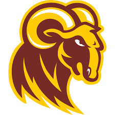

Ayomide Vanessa Isinkaye
Hey there! My name is Ayomide, pronounced "Ah-yaw-mee-day." I am a second-year computer science student at
 Huston-Tillotson University
, and my major interests lie in software engineering, specifically machine learning, data science, artificial intelligence—you know the drill! While working towards being skilled enough to pursue my interests successfully, I’ve learned to use cool technologies like Python, C++, Swift, Java, OpenCV, Linux Systems, GitHub, GStreamer, and GPUs like the Jetson Nano. I have also worked on projects that have helped me build data visualization skills, data analysis skills, a lot of data stuff😄.
I've learnt a lot from extraordinary people around me, leading up to building cool stuff with cool people, which has also helped me develop my leadership, teamwork, communication, and critical thinking skills.
Experience
Robotics Software Developer, Primeberry Team
I worked as a robotics software developer at the Primeberry Team during the ASABE Competition in Anaheim, CA (April 2024 – August 2024). My role involved leading the development of high-accuracy object detection models using OpenCV and optimizing robot performance. Additionally, I integrated CSV data logging and fine-tuned the robot's performance with custom launch files to meet competition requirements.
Peer Learning Coach, Huston-Tillotson University
Since January 2024, I’ve been tutoring students in various subjects, including computer science, mathematics, French, and writing. Based in Austin, TX, I help students strengthen their problem-solving and critical thinking skills. My guidance has led to a 97% homework completion rate among my peers.
Volunteer Data Clerk, ACETS Nigeria
During my volunteer position at ACETS Nigeria in Jos, Plateau, Nigeria (April 2022 – August 2022), I collaborated with staff to enroll over 2,000 households into the OVC project. I maintained confidential records and filing systems, ensuring compliance with strict deadlines while managing sensitive information.